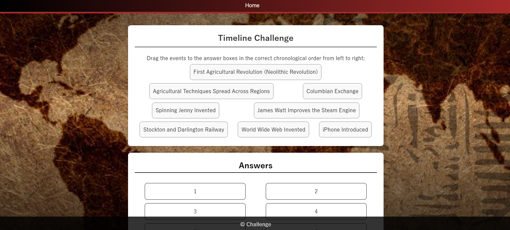
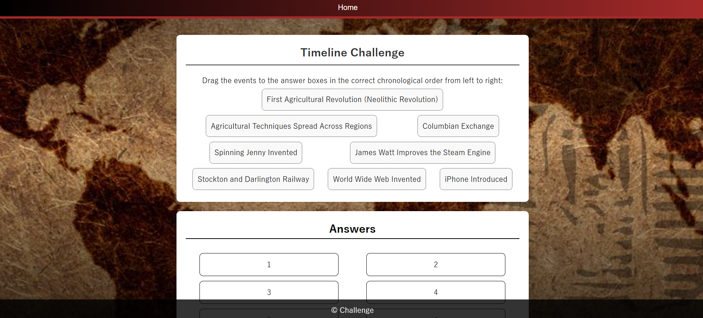

Web Application about Historical Revolutions
This educational web application was developed to teach users about three of the most significant historical revolutions: Agricultural, Industrial, and Digital Revolutions. The goal was to make history more engaging and interactive for students through a digital platform.
The application was built entirely by me using HTML, CSS, and JavaScript, with a focus on clean layout, responsiveness, and ease of use. It features historical timelines, summaries of each revolution, and interactive quizzes to test users' knowledge.
I was responsible for the full development process, including front-end interface design, content structuring, and implementing the dynamic quiz functionality. I also created all the visual elements and ensured the layout was accessible across different screen sizes. This project showcased my ability to combine content, design, and interactivity in a solo development context.

 
